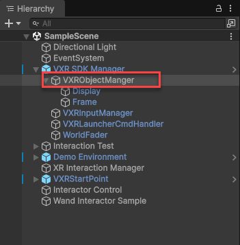
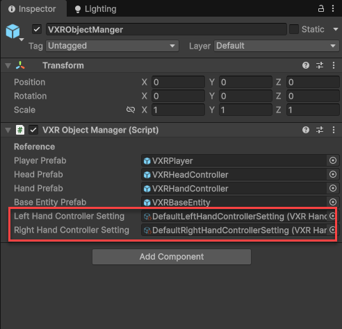
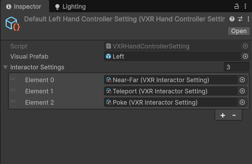
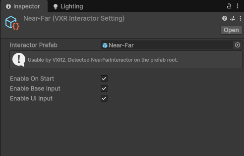
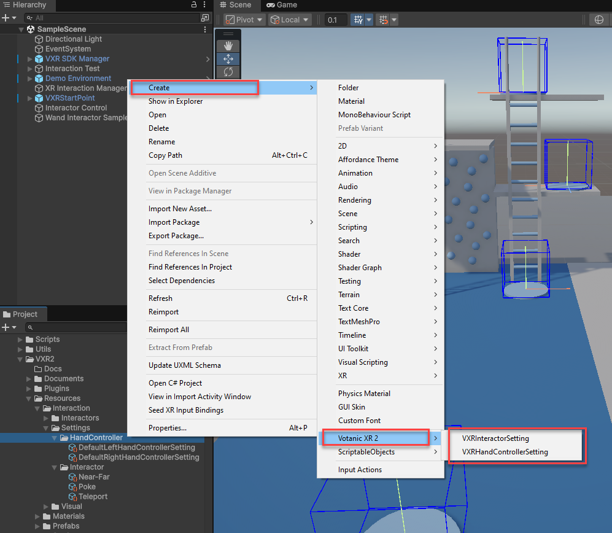

Configure interactor settings
In VotanicXR2 SDK, each hand controller can have one or more interactor components (from Unity XR Interaction Toolkit) attached to them that allow player to interact with the virtual world.
By default, the SDK provides two hand controller settings (both left and right) plus a set of default interactor settings to help kickstart your project.
Set the active hand controller setting
- Select
VXR SDK Manager>VXR Object Managerin the hierachy.

- In the inspector, go to
VXR Object Managercomponent, click either the Left Hand Controller Setting or Right Hand Controller Setting field and assign aVXRHandControllerSettingScriptableObject to set the active hand controller setting.

Edit hand controller properties
If you select a VXRHandControllerSetting ScriptableObject, you can edit its properties in the Inspector tab:
- To set the visual prefab, select a reference in the Visual Prefab field
- To edit the interactors attached to hand controller, select a
VXRInteractorSettingreference and add them to the Interactor Settings list.

Edit interactor properties
If you select a VXRInteractorSetting ScriptableObject, you can edit its properties in the Inspector tab:
- To set the interactor prefab, select a reference in the Interactor Prefab field.
- To enable / disable the interactor on start, tick / untick Enable On Start.
- To enable / disable the interactor to support base input, tick / untick Enable Base Input.
- To enable / disable the interactor to support UI input, tick / untick Enable UI Input.

Create custom hand controller or interactor setting
- Right click on your Project window to open the context menu
- Go to
Create > Votanic XR 2. - Select either
VXRHandControllerSettingorVXRInteractorSettingto create a custom hand controller or interactor setting.

- Follow steps in Edit hand controller properties or Edit interactor properties to configure the hand controller or interactor setting.